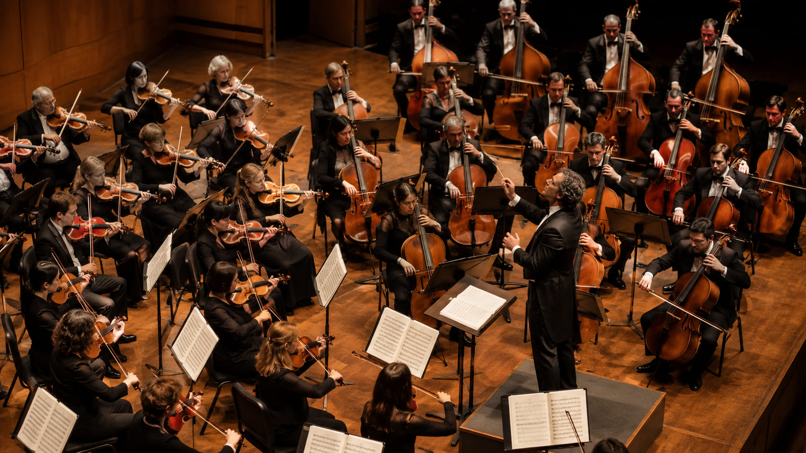

Симфонический оркестр · Пенза · Пенза
Губернаторская симфоническая капелла Пензенской области
← Назад в каталогО коллективе
Краткая справка
Источник: загруженный каталог симфонических оркестров России.
Данные страницы используются как карточка общего каталога портала. Информация может быть дополнена редакцией после проверки официальных источников.
Художественное руководство
Вячеслав Филиппенков - художественный руководитель
Информация о руководителе или дирижёре указана в каталоге и может быть расширена после редакционной проверки.
Телефон: —
E-mail: —
Контакты